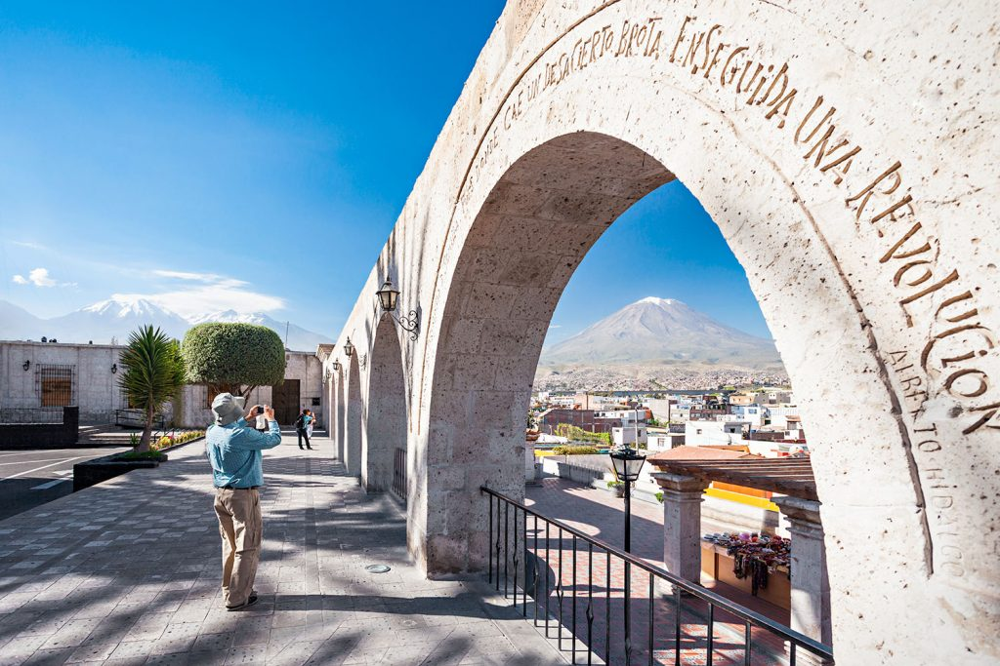
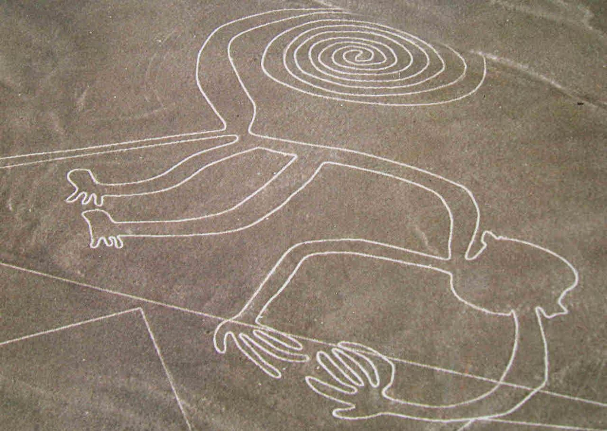
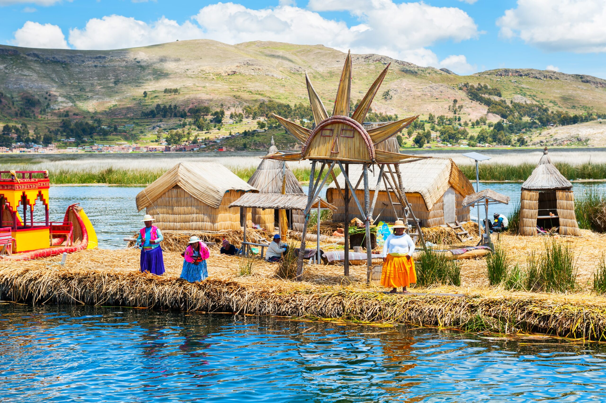
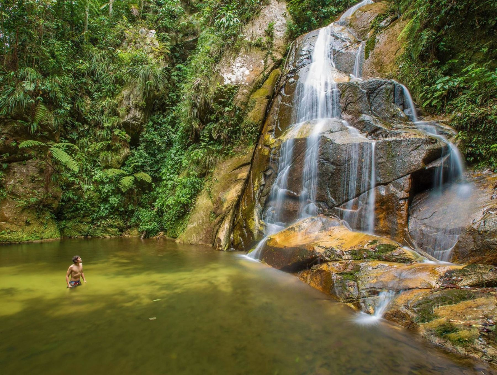
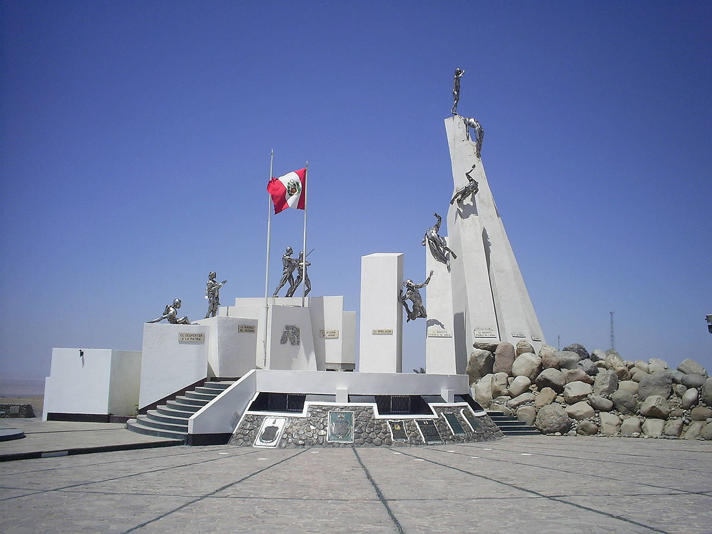

-
Amazonas
-
Ancash
-
Apurímac
-
Arequipa
-
Ayacucho
-
Cajamarca
-
Cuzco
-
Huancavelica
-
Huánuco
-
Ica
-
Junín
-
-
Lambayeque
-
Lima
-
Loreto
-
-
Moquegua
-
Pasco
-
Piura
-
Puno
-
-
Tacna
-
Tumbes
-
Ucayali
Amazonas es uno de los veinticuatro departamentos que, junto a la provincia Constitucional del Callao,forman la República del Perú. Su capital es Chachapoyas y su ciudad más poblada es Bagua Grande. Abarca 39,2 mil km² de agreste territorio, cubierto en su mayoría por la espesa selva de los afluentes del río Marañón, como el río Santiago y el río Utcubamba.Ubicado al norte del país, limita con los departamentos de Cajamarca al oeste, La Libertad al sur, San Martín al sureste, y Loreto al este, así como con la República del Ecuador al norte. En censo 2017, el departamento registró una población total de 379 384 habitantes, con una densidadde 9,6 hab/km² que lo convierte en el cuarto con menor densidad poblacional, solo por delante de los departamentos de Ucayali, Loreto y Madre de Dios. Durante el Virreinato, fue uno de los ocho partidos que llegó a tener la intendencia de Trujillo. En 1802 los pueblos de Lamas, Moyobamba y Tarapoto fueron transferidos del  partido de Chachapoyas a la recién creada Comandancia General de Maynas. Ya en 1821 tras la independencia con el Reglamento Provisional del libertador don José de San Martín, Trujillo se convierte en departamento y Chachapoyas en una de sus provincias. El 21 de noviembre de 1832 se crea el departamento de Amazonas con tres provincias: Chachapoyas, Pataz y Maynas, transferidas del departamento de La Libertad (llamado Trujillo hasta 1823). En 1840, la provincia de Pataz es retornada a La Libertad y en 1853 se separaron los territorios de Maynas para conformar el Gobierno Político-Militar de Loreto con capital en Moyobamba.4 Fue así que Chachapoyas quedó como provincia única del desmembrado departamento de Amazonas hasta la creación de la provincia de Luya en 1861. Le siguió la provincia de Bongará en 1870, la provincia de Rodríguez de Mendoza en 1932, la provincia de Bagua en 1941 y más recientemente la provincia de Utcubamba y la provincia de Condorcanqui en 1984.
partido de Chachapoyas a la recién creada Comandancia General de Maynas. Ya en 1821 tras la independencia con el Reglamento Provisional del libertador don José de San Martín, Trujillo se convierte en departamento y Chachapoyas en una de sus provincias. El 21 de noviembre de 1832 se crea el departamento de Amazonas con tres provincias: Chachapoyas, Pataz y Maynas, transferidas del departamento de La Libertad (llamado Trujillo hasta 1823). En 1840, la provincia de Pataz es retornada a La Libertad y en 1853 se separaron los territorios de Maynas para conformar el Gobierno Político-Militar de Loreto con capital en Moyobamba.4 Fue así que Chachapoyas quedó como provincia única del desmembrado departamento de Amazonas hasta la creación de la provincia de Luya en 1861. Le siguió la provincia de Bongará en 1870, la provincia de Rodríguez de Mendoza en 1932, la provincia de Bagua en 1941 y más recientemente la provincia de Utcubamba y la provincia de Condorcanqui en 1984.
Áncash es uno de los veinticuatro departamentos ,que, junto a la provincia constitucional del Callao, conforman la República del Perú.Su capital es Huaraz y su ciudad más poblada es Chimbote. Fue creado el 12 de febrero de 1821 con el nombre de Huaylas.4 El departamento es ribereño del océano Pacífico por el oeste, y limita con los departamentos de La Libertad por el norte, Huánuco por el este y Lima por el sur. Con 29,6 hab./km², es el octavo departamento más densamente poblado, por detrás de Lima, Lamba yeque, La Libertad, Piura, Tumbes, Cajamarca e Ica. Dentro del departamento, se diferencian dos tipos de paisajes: la árida llanura costera que domina toda la zona occidental del departamento con unancho máximo promedio de 15 km, y las zonas montañosas, que ocupan 72 % del territorio departamental y que comprende a los accidentes geográficos de las cordilleras Blanca, Negra, Huallanca, Huayhuash, la Sierra Oriental de Áncash y el Cañón del Marañón, zonas que en conjunto poseen 20 picos por encima de los 6000 m s. n. m. Estas formaciones montañosas dan origen a ríos muy importantes como el Santa y el Pativilca que desembocan en el océano Pacífico, el Yanamayo y el Marañón, afluentes del Amazonas. Unas 340 000 hectáreas de Áncash están conformadas por tres áreas naturales protegidas: el parque nacional Huascarán (Patrimonio de la Humanidad), la zona reservada Cordillera Huayhuash y el yacimiento paleontológico de Yanashallash, ubicados en la sierra departamental. La historia de Áncash está vinculada a las manifestaciones culturales más tempranas del Antiguo Perú, desde el desarrollo de los trabajos en piedra del Arcaico hacia el siglo XIII a. C., con el hombre de la cueva del Guitarrero. Recibe la influencia de la civilización Caral-Supe; en su territorio, donde confluyen caminos a la selva, costa y sierra, surgió y se desarrolló la cultura Chavín, que posteriormente influyó en las culturas recuay y wari. Ya en la segunda mitad del siglo xv fue integrado al tahuantinsuyo por Pachacútec y Túpac Yupanqui, quienes consolidaron su imperio con la construcción de 3 ramales del camino inca hacia el norte.5 Durante el virreinato del Perú, se aprovechó su riqueza minera y agraria por más de 300 años. Hoy en día estas actividades económicas, sumadas a la pesca, son el eje de crecimiento de la región. Áncash cuenta con un rico patrimonio histórico, con yacimientos arqueológicos precolombinos como Chavín de Huantar (Patrimonio de la Humanidad), Sechín, Yaino o Huilcahuaín. También un tramo muy bien conservado de 50 km del Camino Inca (Patrimonio de la Humanidad). El departamento es la sexta economía del país por aportar al Valor Agregado Bruto nacional un 3,5 %. La importancia relativa de la región en el país es mayor en el caso de los sectores minero, pesquero y manufactura. El 47,8 % de la población empleada labora en el sector terciario, seguido del 37 % en el sector primario, y el 15,2 % restante en el sector secundario.
yeque, La Libertad, Piura, Tumbes, Cajamarca e Ica. Dentro del departamento, se diferencian dos tipos de paisajes: la árida llanura costera que domina toda la zona occidental del departamento con unancho máximo promedio de 15 km, y las zonas montañosas, que ocupan 72 % del territorio departamental y que comprende a los accidentes geográficos de las cordilleras Blanca, Negra, Huallanca, Huayhuash, la Sierra Oriental de Áncash y el Cañón del Marañón, zonas que en conjunto poseen 20 picos por encima de los 6000 m s. n. m. Estas formaciones montañosas dan origen a ríos muy importantes como el Santa y el Pativilca que desembocan en el océano Pacífico, el Yanamayo y el Marañón, afluentes del Amazonas. Unas 340 000 hectáreas de Áncash están conformadas por tres áreas naturales protegidas: el parque nacional Huascarán (Patrimonio de la Humanidad), la zona reservada Cordillera Huayhuash y el yacimiento paleontológico de Yanashallash, ubicados en la sierra departamental. La historia de Áncash está vinculada a las manifestaciones culturales más tempranas del Antiguo Perú, desde el desarrollo de los trabajos en piedra del Arcaico hacia el siglo XIII a. C., con el hombre de la cueva del Guitarrero. Recibe la influencia de la civilización Caral-Supe; en su territorio, donde confluyen caminos a la selva, costa y sierra, surgió y se desarrolló la cultura Chavín, que posteriormente influyó en las culturas recuay y wari. Ya en la segunda mitad del siglo xv fue integrado al tahuantinsuyo por Pachacútec y Túpac Yupanqui, quienes consolidaron su imperio con la construcción de 3 ramales del camino inca hacia el norte.5 Durante el virreinato del Perú, se aprovechó su riqueza minera y agraria por más de 300 años. Hoy en día estas actividades económicas, sumadas a la pesca, son el eje de crecimiento de la región. Áncash cuenta con un rico patrimonio histórico, con yacimientos arqueológicos precolombinos como Chavín de Huantar (Patrimonio de la Humanidad), Sechín, Yaino o Huilcahuaín. También un tramo muy bien conservado de 50 km del Camino Inca (Patrimonio de la Humanidad). El departamento es la sexta economía del país por aportar al Valor Agregado Bruto nacional un 3,5 %. La importancia relativa de la región en el país es mayor en el caso de los sectores minero, pesquero y manufactura. El 47,8 % de la población empleada labora en el sector terciario, seguido del 37 % en el sector primario, y el 15,2 % restante en el sector secundario.
Apurímac es un departamento de la República del Perú situado en el sur del país, en la región andina. Limita por el noreste con Cusco, por el sur con Arequipa y por el oeste con Ayacucho. Con 20 896 km², es el quinto departamento menos extenso, por delante de Tacna, Moquegua, Lambayeque y Tumbes. Se fundó el 28 de abril de 1873. Geológicamente, está situado en la vertiente oriental de la cordillera de los Andes. Su territorio es uno de los más escarpados del país. Es surcado de sur a norte por varios ríos a través de profundos cañones hasta su unión con el río Apurímac en una de las mayores depresiones de la región. El territorio apurimeño fue ocupado por los chancas y los incas hasta la ocupación española. Está dividido administrativamente en siete provincias.45 Tiene una población de 433 952 habitantes, la mayoría quechuahablantes que viven en el área rural.6 La economía se basa principalmente en la agricultura, los servicios y una creciente actividad minera.
Arequipa es uno de los veinticuatro departamentos que, junto con la provincia constitucional del Callao, conforman la República del Perú. Su capital y ciudad más poblada es la homónima Arequipa. Se ubica en el sur del país, además de contar con 528 km de costa en el océano Pacífico siendo este el litoral departamental más extenso en su margen suroeste. Limita con los departamentos de Moquegua al sureste, Puno al noreste, Cuzco, Apurímac y Ayacucho al norte, e Ica al noroeste. La zona costera es una de las porciones más secas del desierto costero, entretanto la región interior andina presenta valles escarpados y cañones. Con 1 569 310 habitantes en 2023, es el cuarto más poblado por detrás de Lima, Piura y La Libertad4, el 71,3 % de los cuales reside en la capital, la ciudad de Arequipa.5 El nivel educativo promedio es superior a  la media nacional; tiene una tasa de analfabetismo del 3,5 % y el 15 % de la población tiene estudios superiores.675 Tiene ocho provincias, de las cuales las más desarrolladas por el volumen de sus contribuciones económicas son Arequipa, Islay y Caylloma. Las principales ciudades de la región, son primeramente, la capital, Arequipa, por su comercio e industrias; el turismo también es importante en Arequipa. La mina Cerro Verde es parte importante de su economía, después le sigue la ciudad de Mollendo, por el puerto de Matarani, el turismo de playa y por su agricultura, seguidamente del pueblo de Chivay, por su turismo, gracias al cañón del Colca, y el pueblo de Camaná, gracias al puerto de Quilca y al turismo de playa. El 16,6 % de la red de carreteras en el departamento es asfaltado, siendo Arequipa, Caravelí, Camaná y Caylloma las provincias con el porcentaje más alto de este tipo de superficie.5 Este es el segundo departamento más interconectado en términos de telecomunicaciones, después de Lima, ya que tiene 111,2 mil líneas de telefonía fija, con una teledensidad de 9 líneas por cada 100 habitantes y una densidad de 31,84 líneas móviles por cada 100 habitantes.
la media nacional; tiene una tasa de analfabetismo del 3,5 % y el 15 % de la población tiene estudios superiores.675 Tiene ocho provincias, de las cuales las más desarrolladas por el volumen de sus contribuciones económicas son Arequipa, Islay y Caylloma. Las principales ciudades de la región, son primeramente, la capital, Arequipa, por su comercio e industrias; el turismo también es importante en Arequipa. La mina Cerro Verde es parte importante de su economía, después le sigue la ciudad de Mollendo, por el puerto de Matarani, el turismo de playa y por su agricultura, seguidamente del pueblo de Chivay, por su turismo, gracias al cañón del Colca, y el pueblo de Camaná, gracias al puerto de Quilca y al turismo de playa. El 16,6 % de la red de carreteras en el departamento es asfaltado, siendo Arequipa, Caravelí, Camaná y Caylloma las provincias con el porcentaje más alto de este tipo de superficie.5 Este es el segundo departamento más interconectado en términos de telecomunicaciones, después de Lima, ya que tiene 111,2 mil líneas de telefonía fija, con una teledensidad de 9 líneas por cada 100 habitantes y una densidad de 31,84 líneas móviles por cada 100 habitantes.
Ayacucho es un departamento de la República del Perú situado en el centro sur del país, en la región andina, limitando al norte con Junín, al noreste con Cuzco, al este con Apurímac, al sur con Arequipa, al oeste con Ica y al noroeste con Huancavelica. Con 14 hab./km² es el séptimo menos densamente poblado, por delante de Pasco, Moquegua, Amazonas, Ucayali, Loreto y Madre de Dios, el menos densamente poblado. Se fundó el 25 de abril de 1822. Comprende provincias de ambas vertientes de la cordillera de los Andes (oriental y occidental). Tiene una superficie de 43,8 mil km², que en términos de extensión es similar a la de Dinamarca o Estonia, y una población hacia 2007 de 613 mil habitantes.
Cajamarca es uno de los veinticuatro departamentos que, junto a la provincia constitucional del Callao, forman la República del Perú. Su capital y ciudad más poblada es la homónima Cajamarca. Ubicado al noroeste del país, limita por el norte con Ecuador, por el este con el departamento de Amazonas, por el sur con el departamento de La Libertad y por el oeste con los departamentos de Lambayeque y Piura. Con 1 341 012 hab. en 2017 es el quinto departamento más poblado por detrás de Lima, Piura, La Libertad y Arequipa y con 41,7 hab/km² es el sexto más densamente poblado, por detrás de departamento de Lima, departamento de Lambayeque, departamento de La Libertad, departamento de Piura y departamento de Tumbes. Fue fundado el 11 de febrero de 1855. Cuenta con diversas cuencas, la mayoría afluentes del río Marañón; y otras que desembocan al océano Pacífico; llegando también a cubrir pequeñas porciones de costa en la parte más occidental de Contumazá.
Cuzco es un departamento de la República del Perú ubicado en el sureste del país, con capital en la h omónima ciudad del Cuzco. Limitando al norte con los departamentos de Junín y de Ucayali, al este con Madre de Dios, al sureste con Puno, al sur con Arequipa y al oeste con Apurimac y Ayacucho. Con 71 986 km² de superficie es el cuarto departamento más extenso, a continuación de Loreto, Ucayali y Madre de Dios. Su territorio comprende un sector de la región andina en la parte central y meridional de su jurisdicción, y zonas bajas cubiertas por la selva amazónica en su parte septentrional. En esta región se encuentran las primeras civilizaciones andinas con la influencia de Huari y Tiahuanaco. Es también cuna del Tahuantinsuyo y sitio de la resistencia de los Incas de Vilcabamba tras la Conquista del Perú. Es en este departamento, en la hacienda Marcahuasi (Mollepata), donde en el siglo xvi se cultiva la primera vid del continente americano y se produce el primer pisco. Sus principales recursos agrícolas son el maíz, la cebada, la quinua, el té y el café. En minería sobresale el oro y en energía el gas.
omónima ciudad del Cuzco. Limitando al norte con los departamentos de Junín y de Ucayali, al este con Madre de Dios, al sureste con Puno, al sur con Arequipa y al oeste con Apurimac y Ayacucho. Con 71 986 km² de superficie es el cuarto departamento más extenso, a continuación de Loreto, Ucayali y Madre de Dios. Su territorio comprende un sector de la región andina en la parte central y meridional de su jurisdicción, y zonas bajas cubiertas por la selva amazónica en su parte septentrional. En esta región se encuentran las primeras civilizaciones andinas con la influencia de Huari y Tiahuanaco. Es también cuna del Tahuantinsuyo y sitio de la resistencia de los Incas de Vilcabamba tras la Conquista del Perú. Es en este departamento, en la hacienda Marcahuasi (Mollepata), donde en el siglo xvi se cultiva la primera vid del continente americano y se produce el primer pisco. Sus principales recursos agrícolas son el maíz, la cebada, la quinua, el té y el café. En minería sobresale el oro y en energía el gas.
Huancavelica es un departamento de la República del Perú con capital en la homónima Huancavelica, ubicado en el centro oeste del país. Limita con los departamentos de Junín al norte, Ayacucho al sur y al este, Ica al suroeste y Lima al noroeste. Con 22 131 km² es el séptimo departamento menos extenso, por delante de Ica, Apurímac, Tacna, Moquegua, Lambayeque y Tumbes, el menos extenso. Se fundó el 26 de abril de 1822. Su escarpada jurisdicción comprende territorio de ambas vertientes de la Cordillera de los Andes con algunas zonas cubiertas por la selva amazónica en su sector norte. Es el departamento con mayor pobreza económica del Perú.
Huánuco es un departamento de la República del Perú ubicado en el centro norte del país, con capital en su ciudad más poblada: la homónima Huánuco. Limita al norte con La Libertad y San Martín, al norte y este con Loreto y Ucayali, al sur con Pasco, al oeste con Áncash. Y se ubica al Noreste de Lima En la mayor parte de su territorio, comprende una porción de la vertiente oriental cordillera de los Andes surcada por los ríos Marañón y Huallaga y una parte del llano amazónico al este en la provincia de Puerto Inca. El tercio suroccidental corresponde a la región de la sierra, mientras el resto del departamento está cubierto por la selva amazónica. Recibe su nombre en referencia a su capital y sede regional: la ciudad de Huánuco fue fundada el 15 de agosto de 1539. Tras la independencia, fue designado como departamento el 24 de enero de 1869.
Ica es uno de los veinticuatro departamentos que, junto con la Provincia Constitucional del Callao, conforman la República del Perú. Su capital y ciudad más poblada es la homónima Ica. Ubicado en el occidente central del país, colinda al oeste con el océano Pacífico y limita con los departamentos de Lima al norte, Huancavelica y Ayacucho al este y Arequipa al sureste. Su territorio es casi por completo parte del desierto costero del Perú y conforma el llamado Gran Tablazo de Ica. En sus valles costeros se desarrollaron avanzadas culturas del Antiguo Perú como Paracas, Nazca y Chincha. Destaca por su amplia producción vitivinícola y agroexportadora. Con 21 327 km² es el sexto departamento menos extenso por delante de Apurímac, Tacna, Moquegua, Lambayeque y Tumbesy con 33,4 hab./km² es el séptimo más densamente poblado por detrás de Lima, Lambayeque, La Libertad, Piura, Tumbes y Cajamarca. Fue creadoel 30 de enero de 1866.
Junín es un departamento de la República del Perú ubicado en el centro del país. Su territorio de 44 197 km² abarca una zona de la región andina al oeste y la zona oriental cubierta por la selva amazónica. Su capital y ciudad más poblada es Huancayo, ubicada al suroeste del departamento en el Valle del Mantaro. Limita con otros seis departamentos: Pasco por el norte, Lima al oeste, Ayacucho y Huancavelica al sur, Cusco al sureste y Ucayali al noroeste. El departamento fue creado a inicios de la república el 12 de febrero de 1821 como el departamento de Tarma, sucesor de la circunscripción colonial de la intendencia de Tarma.
La Libertad es uno de los veinticuatro departamentos que, junto con la provincia constitucional del Callao, forman la República del Perú. Su capital y ciudad más poblada es Trujillo. Tiene 2 patrimonios de la humanidad declarados por la Unesco: el parque nacional del Río Abiseo en 1983 y Chan Chan en 1986. Es líder a nivel nacional en el sector agroexportador y en producción de oro.234 Y es el segundo departamento con más electores según el JNE al 2021.56 Y con una población de más de dos millones de liberteños al 2020.7 Posee el segundo parque automotor más grande del Perú. Se ubica al noroeste del país. Limita por el norte con departamento de Lambayeque, el departamento de Cajamarca y el departamento de Amazonas; por el este con el departamento de San Martín, por el sureste con el departamento de Huánuco, por el sur con el departamento de Áncash y por el oeste con el Océano Pacífico. Su población según el censo de 2017 era de 1 778 080 habitantes.9 Es uno de los departamentos más poblados  —por detrás de Lima y Piura— y con 63,4 hab/km², el tercero más densamente poblado, por detrás de Lima y Lambayeque. Se creó como departamento el 12 de febrero de 1821.10 Y con una población de más de 2 millones de Liberteños al 2020.7 La Libertad fue territorio de varias civilizaciones importantes del antiguo Perú. Hacia el siglo i a. C. surgió en la costa la cultura Moche, famosa por su arte cerámico, y en la Sierra, la cultura Cajamarca. El departamento conoció la influencia huari y en el Intermedio Tardío conoció la expansión del Imperio Chimú por toda la costa norte y la influencia en las zonas altas del reino de Huamachuco, a su vez relacionado con el reino de Cuismanco. Este departamento fue posteriormente anexado al Imperio incaico y luego a la corona española. En los tiempos de colonización española, fue fundada la ciudad de Trujillo, la cual ejerció gran influencia en el norte del país como sede administrativa de importancia política, económica y eclesiástica. Cuando el virrey Toledo el 22 de diciembre de 1574 reorganizó los corregimientos de indios (o de naturales), que habían sido creados por el gobernador Lope García de Castro en 1565, dispuso que los corregimientos de Cajamarca, Chicama y Chimo o Chiclayo, Piura y Paita, Santa, y Saña dependieran del Corregimiento de españoles de Trujillo y los corregimientos de Cajamarquilla, Los Pacllas, y Luya y Chillaos dependieran del de Chachapoyas. Todos en el distrito de la Real Audiencia de Lima. En 1611 Los Pacllas fue anexado a Chachapoyas, en 1635 Chicamo o Cliclayo fue anexado a Saña y en 1773 Luya, Chillaos y Lamas fue anexado a Chachapoyas. El 24 de marzo de 1614 fue establecido el Obispado de Trujillo con los corregimientos de: Trujillo, Cajamarca, Cliclayo, Piura y Paita, Saña, Cajamarquilla, Los Pacllas, Luya y Chillaos, y Jaén de Bracamoros. En 1759 el corregimiento de Huamachuco fue formado del de Cajamarca.11 Los corregimientos fueron suprimidos en 1784, por el rey Carlos III y reemplazados por las intendencias. Con el territorio del Obispado de Trujillo (excepto Jaén de Bracamoros) se creó la Intendencia de Trujillo. Los corregimientos pasaron a ser partidos de la intendencia. El sistema de intendencias fue establecido en el Virreinato del Perú mediante la orden real de 5 de agosto de 1783, siendo aplicada la Real Ordenanza de Intendentes del 28 de enero de 1782. El primer intendente de Trujillo fue Fernando de Saavedra, quien asumió en 1784, nombrado por el virrey a propuesta del visitador general Jorge Escobedo y Alarcón y aprobado por el rey el 24 de enero de 1785.12 Fue parte de la Intendencia de Trujillo que llegó a tener nueve partidos que fueron Trujillo, Lambayeque, Piura, Cajamarca, Huamachuco, Chota, Moyobamba, Chachapoyas, Jaén y la Comandancia General de Maynas (conformado por los actuales departamentos de San Martín, Ucayali y Loreto), siendo la Intendencia de Trujillo la más grande del Virreinato del Perú, es decir casi todo el norte del Perú actual; su primer intendente fue Fernando Saavedra de 1784 a 1791.13 Después de este le seguirían Vicente Gil de Taboada (1791-1805 y 1810-1820), Felice del Risco y Torres (provisional) (1805-1810) y el marqués de Torre Tagle (1820), quien dirigió la independencia de la Intendencia.14 En la República, la costa liberteña fue sede de los más importantes ingenios azucareros del país, destruidos e incendiados por la Expedición Lynch. También, la Guerra del Pacífico concluyó en La Libertad con la batalla de Huamachuco en 1883. En la actualidad, La Libertad es el principal centro económico del norte del país.
—por detrás de Lima y Piura— y con 63,4 hab/km², el tercero más densamente poblado, por detrás de Lima y Lambayeque. Se creó como departamento el 12 de febrero de 1821.10 Y con una población de más de 2 millones de Liberteños al 2020.7 La Libertad fue territorio de varias civilizaciones importantes del antiguo Perú. Hacia el siglo i a. C. surgió en la costa la cultura Moche, famosa por su arte cerámico, y en la Sierra, la cultura Cajamarca. El departamento conoció la influencia huari y en el Intermedio Tardío conoció la expansión del Imperio Chimú por toda la costa norte y la influencia en las zonas altas del reino de Huamachuco, a su vez relacionado con el reino de Cuismanco. Este departamento fue posteriormente anexado al Imperio incaico y luego a la corona española. En los tiempos de colonización española, fue fundada la ciudad de Trujillo, la cual ejerció gran influencia en el norte del país como sede administrativa de importancia política, económica y eclesiástica. Cuando el virrey Toledo el 22 de diciembre de 1574 reorganizó los corregimientos de indios (o de naturales), que habían sido creados por el gobernador Lope García de Castro en 1565, dispuso que los corregimientos de Cajamarca, Chicama y Chimo o Chiclayo, Piura y Paita, Santa, y Saña dependieran del Corregimiento de españoles de Trujillo y los corregimientos de Cajamarquilla, Los Pacllas, y Luya y Chillaos dependieran del de Chachapoyas. Todos en el distrito de la Real Audiencia de Lima. En 1611 Los Pacllas fue anexado a Chachapoyas, en 1635 Chicamo o Cliclayo fue anexado a Saña y en 1773 Luya, Chillaos y Lamas fue anexado a Chachapoyas. El 24 de marzo de 1614 fue establecido el Obispado de Trujillo con los corregimientos de: Trujillo, Cajamarca, Cliclayo, Piura y Paita, Saña, Cajamarquilla, Los Pacllas, Luya y Chillaos, y Jaén de Bracamoros. En 1759 el corregimiento de Huamachuco fue formado del de Cajamarca.11 Los corregimientos fueron suprimidos en 1784, por el rey Carlos III y reemplazados por las intendencias. Con el territorio del Obispado de Trujillo (excepto Jaén de Bracamoros) se creó la Intendencia de Trujillo. Los corregimientos pasaron a ser partidos de la intendencia. El sistema de intendencias fue establecido en el Virreinato del Perú mediante la orden real de 5 de agosto de 1783, siendo aplicada la Real Ordenanza de Intendentes del 28 de enero de 1782. El primer intendente de Trujillo fue Fernando de Saavedra, quien asumió en 1784, nombrado por el virrey a propuesta del visitador general Jorge Escobedo y Alarcón y aprobado por el rey el 24 de enero de 1785.12 Fue parte de la Intendencia de Trujillo que llegó a tener nueve partidos que fueron Trujillo, Lambayeque, Piura, Cajamarca, Huamachuco, Chota, Moyobamba, Chachapoyas, Jaén y la Comandancia General de Maynas (conformado por los actuales departamentos de San Martín, Ucayali y Loreto), siendo la Intendencia de Trujillo la más grande del Virreinato del Perú, es decir casi todo el norte del Perú actual; su primer intendente fue Fernando Saavedra de 1784 a 1791.13 Después de este le seguirían Vicente Gil de Taboada (1791-1805 y 1810-1820), Felice del Risco y Torres (provisional) (1805-1810) y el marqués de Torre Tagle (1820), quien dirigió la independencia de la Intendencia.14 En la República, la costa liberteña fue sede de los más importantes ingenios azucareros del país, destruidos e incendiados por la Expedición Lynch. También, la Guerra del Pacífico concluyó en La Libertad con la batalla de Huamachuco en 1883. En la actualidad, La Libertad es el principal centro económico del norte del país.
Lambayeque es uno de los veinticuatro departamentos que junto a la Provincia Constitucional del Callao forman la República del Perú. Su capital y ciudad más poblada es Chiclayo, se encuentra ubicado al noroeste del país, limita al norte con Piura, al este con Cajamarca, al sur con La Libertad y al oeste con el océano Pacífico. Con 14 231 km² es el cuarto departamento menos extenso por detrás de Moquegua y con 95,29 hab/km², el tercero más densamente poblado, por detrás de Lima y Callao. Se fundó el siete de enero de 1872. Está dividido políticamente en 3 provincias y 38 distritos.
Lima, a veces llamado Lima Provincias o Lima región, es uno de los veinticuatro departamentos que , junto con la provincia constitucional del Callao, conforman la República del Perú. Está ubicado en la costa central del país, con sede del Gobierno Regional de Lima ubicada en Huacho. Es el único departamento con una provincia autónoma de régimen especial: la provincia de Lima, administrada por la Municipalidad Metropolitana de Lima, que abarca casi la totalidad de la ciudad de Lima, capital del país. Limita por el norte con el departamento de Áncash, por el noreste con el departamento de Huánuco y el departamento de Pasco, por el este con el departamento de Junín, por el sureste con el departamento de Huancavelica, por el sur con el departamento de Ica y por el oeste con la provincia constitucional del Callao y el océano Pacífico. Es el departamento más poblado del país.4 El departamento se creó el 4 de noviembre de 1823.5 Actualmente, en el departamento de Lima, viven dos pueblos indígenas u originarios: los pueblos quechua y jaqaru, distribuidos en once comunidades campesinas.
, junto con la provincia constitucional del Callao, conforman la República del Perú. Está ubicado en la costa central del país, con sede del Gobierno Regional de Lima ubicada en Huacho. Es el único departamento con una provincia autónoma de régimen especial: la provincia de Lima, administrada por la Municipalidad Metropolitana de Lima, que abarca casi la totalidad de la ciudad de Lima, capital del país. Limita por el norte con el departamento de Áncash, por el noreste con el departamento de Huánuco y el departamento de Pasco, por el este con el departamento de Junín, por el sureste con el departamento de Huancavelica, por el sur con el departamento de Ica y por el oeste con la provincia constitucional del Callao y el océano Pacífico. Es el departamento más poblado del país.4 El departamento se creó el 4 de noviembre de 1823.5 Actualmente, en el departamento de Lima, viven dos pueblos indígenas u originarios: los pueblos quechua y jaqaru, distribuidos en once comunidades campesinas.
Loreto es un departamento de la República del Perú con capital en la ciudad de Iquitos, situado en el noreste del país, en plena Amazonía. Limita por el norte con Ecuador y Colombia, por el este con Brasil, por el sur con Ucayali y Huánuco, y por el oeste con San Martín y Amazonas. Con 368 852 km² (28 % del territorio nacional), es el departamento más extenso, la séptima mayor entidad subnacional de América Latina por detrás de cinco estados de Brasil (Amazonas, Pará, Mato Grosso, Minas Gerais y Bahía) y del departamento de Santa Cruz de Bolivia y, con 2,4 habs./km², el segundo menos densamente poblado, por delante de Madre de Dios. Se fundó el 7 de febrero de 1866. Por su llano territorio discurren sinuosamente extensos ríos drenados desde la cordillera de los Andes que provocan inundaciones estacionales. En esta región, se unen los ríos Marañón y el Ucayali, y nace el curso principal del río Amazonas. El territorio loretano cuenta con más de un millón de habitantes (2023), inicialmente fue poblado por sucesivas oleadas de grupos indígenas errantes. Durante la colonización, pocas misiones tuvieron éxito en formar algunas poblaciones permanentes. A fines del siglo xix, la explosión de la fiebre del caucho produjo súbitas fortunas en manos de los caucheros y la forzada esclavitud de cientos de indígenas. Durante este periodo, se exploraron los ríos de la selva y se consolidó la ciudad de Iquitos, capital departamental desde la escisión del departamento de San Martín en 1897. Loreto es también la región peruana más diversa en etnias y lenguas indígenas.4 Cuatro de las lenguas aún empleadas en la región son lenguas aisladas (urarina, taushiro y ticuna) y alberga cinco familias de lenguas endémicas (las familias cahuapana, huitoto, peba-yagua, tucano y záparo). Muchas otras variedades lingüísticas han desaparecido recientemente, como el muniche. Fue parte del Gobierno de la Comandancia General de Maynas, que fue una división territorial del Imperio español en el virreinato del Perú, creada mediante una real cédula del 15 de julio de 1802. Luego, fue parte de la intendencia de Trujillo que abarcaba, además de este, el territorio de los actuales departamentos peruanos de Amazonas, San Martín, La Libertad y Ucayali. En 1822, el Gobierno de Colombia, envió al Perú a Joaquín Mosquera a solicitar la restitución de Maynas. El 25 de julio de 1824, el Congreso de la Gran Colombia dictó una ley de división territorial pretendiendo incluir en la provincia de Pichincha del departamento de Quito al cantón de Quijos, según los límites que tenía al tiempo de creación del virreinato de Nueva Granada. Pretendía incorporar también al departamento del Azuay la provincia de Jaén de Bracamoros y Maynas. La negativa peruana a ceder los territorios desencadenó una guerra entre ambos países, la guerra grancolombo-peruana.5 A partir de la ley del 21 de noviembre de 1832, Maynas fue integrada al territorio del nuevo departamento peruano de Amazonas, del cual se separó en 1853, cuando se crea un Gobierno político en Loreto.6 En la actualidad, tiene muy buenas relaciones con los departamentos de Huánuco, Áncash y departamentos que fueron parte de la Intendencia de Trujillo como San Martín, Ucayali y La Libertad.
Madre de Dios es un departamento de la República del Perú con capital en la ciudad de Puerto Maldonado, ubicado en el sureste del país, en la Amazonía, limitando al norte con Ucayali y Brasil, al este con Bolivia, al sur con Puno y al oeste con Cuzco. Con 85 300 km² es el tercer departamento más extenso por detrás de Loreto y Ucayali y con 1,3 hab./km², el menos densamente poblado. Fue creado el 26 de diciembre de 1912] a partir de territorios de Puno y Cuzco. Recibe su nombre del río Madre de Dios, de cuya cuenca son tributarios la mayor parte de los ríos de la región y sobre cuyas riberas se erige la capital departamental: Puerto Maldonado. Desde el punto de vista jerárquico de la Iglesia católica, forma parte del Vicariato Apostólico de Puerto Maldonado.
Moquegua es uno de los veinticuatro departamentos que, junto a la Provincia Constitucional del Callao, forman la República del Perú. Su capital y ciudad más poblada es la homónima Moquegua. Se ubica en el sureste del país, en la vertiente occidental de la cordillera de los Andes. Limita por el norte con el departamento de Arequipa, por el este con el departamento de Puno, por el sur con el departamento de Tacna y por el oeste con el océano Pacífico. Con 15 734 km², es el tercer departamento menos extenso por delante de Lambayeque y Tumbes, el menos extenso y con 10,3 hab./km², es el quinto menos densamente poblado por delante de Amazonas, Ucayali, Loreto y Madre de Dios, el menos densamente poblado. Este departamento fue creado el 2 de enero de 1837 con la ciudad de Moquegua como capital. Con un PIB per cápita de USD 28 740 y un IDH de 0.881, Moquegua es el departamento más rico según MINCETUR y con el más alto índice de desarrollo humano del país según el PNUD.
Pasco es un departamento de la República del Perú ubicado en el centro del país, cuya capital es la ciudad de Cerro de Pasco. Comprende una parte andina en su parte oeste y una parte amazónica en el este. Limitando al norte con Huánuco, al este con Ucayali, al sur con Junín y al oeste con Lima. Su extensión es de 25 320 km² y una densidad de 11,1 hab/km². Fue creado el 27 de noviembre de 1944, escindido de Junín. La porción occidental corresponde al Nudo de Pasco, zona de mesetas elevadas y puna, asiento de mineras, mientras que la porción oriental corresponde a la Selva Alta o yunga amazónica habitada por colonos e indígenas de la familia arahuaca.
la ciudad de Cerro de Pasco. Comprende una parte andina en su parte oeste y una parte amazónica en el este. Limitando al norte con Huánuco, al este con Ucayali, al sur con Junín y al oeste con Lima. Su extensión es de 25 320 km² y una densidad de 11,1 hab/km². Fue creado el 27 de noviembre de 1944, escindido de Junín. La porción occidental corresponde al Nudo de Pasco, zona de mesetas elevadas y puna, asiento de mineras, mientras que la porción oriental corresponde a la Selva Alta o yunga amazónica habitada por colonos e indígenas de la familia arahuaca.
Piura es uno de los veinticuatro departamentos que, junto a la Provincia Constitucional del Callao, forman la República del Perú. Su capital y ciudad más poblada es la homónima Piura. El departamento de Piura se encuentra ubicado en la zona norte del país, abarcando su territorio zonas de la costa y sierra. Limita al noroeste del país, limita al norte con Tumbes y Ecuador, al este con Cajamarca, al sur con Lambayeque y al oeste con el océano Pacífico. Con 2 123 826 habitantes1 es el segundo departamento más poblado del Perú solamente precedido por el departamento de Lima y con una densidad demográfica 46,7 hab./km², el cuarto más densamente poblado, por detrás de Lima, Lambayeque y La Libertad. Fue creado políticamente el 30 de marzo de 1861. Comprende una dilatada planicie en su mayor extensión Costa y una región montañosa menos extensa en la zona oriental del departamento Sierra. Desde la zona montañosa discurren los ríos Quiroz, Piura y Chira, que irrigan las excepcionales zonas cultivadas de la planicie costera,  donde se extiende el bosque seco ecuatorial y el desierto peruano. Entre los años 100 a. C. y 400 de nuestra era se desarrolló en el valle inferior del río Piura la cultura Vicús, vinculada a la precedente cultura Chavín; posteriormente la zona se incorporó a la influencia de la cultura Moche. Hacia el siglo xv habitaban la zona costera el pueblo tallán mientras que los guayacundos y bracamoros ocupaban la región de Ayabaca y Huancabamba. Durante el virreinato, fue en este territorio que surgieron expresiones mestizas como el tondero; más tarde en la época republicana fue origen de Miguel Grau Seminario, el héroe peruano más afamado. En la zona noroccidental se extraen petróleo y fosfatos. En Piura nacen dos personajes militares destacados y ambos fueron presidentes del Perú: Luis Miguel Sánchez Cerro y Juan Velasco Alvarado.
donde se extiende el bosque seco ecuatorial y el desierto peruano. Entre los años 100 a. C. y 400 de nuestra era se desarrolló en el valle inferior del río Piura la cultura Vicús, vinculada a la precedente cultura Chavín; posteriormente la zona se incorporó a la influencia de la cultura Moche. Hacia el siglo xv habitaban la zona costera el pueblo tallán mientras que los guayacundos y bracamoros ocupaban la región de Ayabaca y Huancabamba. Durante el virreinato, fue en este territorio que surgieron expresiones mestizas como el tondero; más tarde en la época republicana fue origen de Miguel Grau Seminario, el héroe peruano más afamado. En la zona noroccidental se extraen petróleo y fosfatos. En Piura nacen dos personajes militares destacados y ambos fueron presidentes del Perú: Luis Miguel Sánchez Cerro y Juan Velasco Alvarado.
Puno es uno de los veinticuatro departamentos que, junto con la Provincia Constitucional del Callao, conforman la República del Perú. Su capital es la homónima Puno y su ciudad más poblada es Juliaca. Ubicado en el sureste del país, limita por el norte con el departamento de Madre de Dios, por el este con Bolivia (Departamento de La Paz), por el suroeste con los departamentos de Tacna y Moquegua y por el oeste con los departamentos de Arequipa y el Cuzco. Con 66 997 km² es el quinto departamento más extenso, por detrás de Loreto, Ucayali, Madre de Dios y Cuzco. Se fundó el 26 de abril de 1822. Su fiesta de la Virgen de la Candelaria fue declarada Patrimonio Cultural Inmaterial de la Humanidad por la Unesco el 27 de noviembre de 2014.4 Se estima que en esta parte del Altiplano se ubica el centro de origen de la papa cultivada. El Collao fue territorio de la antigua cultura pucará. Posteriormente, se desarrollaron en la región diversos señoríos conquistados por el Imperio incaico hacia el siglo xv. Durante la Colonia, fue una importante zona comercial. A fines del siglo xviii, fue importante teatro de operaciones de la Rebelión de Tupac Amaru II en sus dos fases. considerado como el Primer Grito Libertario en América y su antecesor Tupac Amaru I fue el primero en levantarse contra la opresión Europea. Fue creado como departamento el 26 de abril de 1822 en sustitución de la intendencia colonial con antelación a la expulsión de los realistas acantonados en la zona, efectuada recién en 1824 tras la Batalla de Ayacucho.
San Martín es un departamento del Perú situado en la parte norte del país, con capital en la ciudad de Moyobamba. Su ciudad más poblada es Tarapoto. Limita por el norte con el departamento de Amazonas, por el noreste con el departamento de Loreto, por el sur con el departamento de Huánuco y por el oeste con el departamento de La Libertad. Con 51 253 km² es el séptimo departamento más extenso por detrás de Loreto, Ucayali, Madre de Dios, Cusco, Puno y Arequipa y, con 14,2 habs./km², el octavo menos densamente poblado, por delante de Ayacucho, Pasco, Moquegua, Amazonas, Ucayali, Loreto y Madre de Dios. Fue creado mediante Ley 201, del 4 de septiembre de 1906. Fue parte de la Intendencia de Trujillo, que llegó a tener nueve partidos que fueron Trujillo, Lambayeque, Piura, Cajamarca, Huamachuco, Chota, Moyobamba, Chachapoyas, Jaén y Maynas. Este último partido, anteriormente, conformaba los departamentos de lo que hoy se conoce como San Martín, Ucayali y Loreto, siendo la Intendencia de Trujillo la más grande del virreinato del Perú, es decir, casi todo el norte del Perú actual. Su primer intendente fue Fernando Saavedra, de 1784 a 1791.4 Después de este, le seguirían Vicente Gil de Taboada (1791-1805 y 1810-1820).5 Mediante una real cédula del 15 de julio de 1802, pasó a formar parte de la entonces flamante de la Comandancia General de Maynas, que abarcaba de iure los actuales departamentos peruanos de Amazonas, Cajamarca, Ucayali y Loreto, además de San Martín. En 1822 el Gobierno de Colombia envió al Perú a Joaquín Mosquera a solicitar la restitución de Maynas. El 25 de julio de 1824, el Congreso de la Gran Colombia dictó una ley de división territorial pretendiendo incluir en la provincia de Pichincha del departamento de Quito al cantón de Quijos, según los límites que tenía al tiempo de creación del virreinato de Nueva Granada. Pretendía incorporar también al departamento de Azuay la provincia de Jaén de Bracamoros y Maynas. La negativa peruana a ceder los territorios desencadenó una guerra entre ambos países: la guerra grancolombo-peruana.6 A partir de la ley del 21 de noviembre de 1832, Maynas fue integrada al territorio del nuevo departamento peruano de Amazonas, del cual se separó en 1853, cuando se crea un Gobierno político en Loreto.7 En la actualidad, tiene muy buenas relaciones con los departamentos de Huánuco, Áncash y departamentos que fueron parte de la Intendencia de Trujillo como Ucayali, Loreto y La Libertad.
Tacna es uno de los veinticinco departamentos, conforman la República del Perú. Su capital y ciudad más poblada es la homónima Tacna. Se ubica en el extremo sur del país, limitando por el noroeste con el departamento de Moquegua, por el noreste con el departamento de Puno, por el este con Bolivia, por el sureste con Chile y por el suroeste con el océano Pacífico. Con 16 076 km², es el cuarto departamento menos extenso, por delante de Moquegua, Lambayeque y Tumbes, el menos extenso. La región se creó el 25 de junio de 1875. Comprende en las dos terceras partes de su espacio una de las porciones más áridas del desierto costero surcados por estrechos ríos; y el tercio restante corresponde a la puna andina, una porción elevada de la agreste cordillera de los Andes al sur de la meseta del Collao. Fue poblada por cazadores-recolectores a inicios del Holoceno y su cultura se vio influida por los pueblos altiplánicos. Durante la colonia, su población estuvo inmersa dentro del proceso de mestizaje. En el siglo xix, en esta región sucedieron varios alzamientos secesionistas previos a la Independencia del Perú. Tras la Guerra del Pacífico, fue administrada en su mayor parte por Chile (Provincia chilena de Tacna),n. 1 Tarata hasta el 1 de septiembre de 1925 y el resto hasta el 28 de agosto de 1929 debido al Tratado de Lima. La actual provincia de Jorge Basadre y Candarave, al norte del río Sama siguió siendo administrado por Perú después de la guerra del Pacífico. Más de las siete octavas partes de la población tacneña reside en la capital regional. La cultura tradicional tiene un importante sustrato cultural aimara, especialmente en las zonas altoandinas, y criolla. La resistencia a la chilenización en la posguerra ha sido parte importante de la identidad de la región.
Tumbes es uno de los veinticuatro departamentos que, junto a la Provincia Constitucional del Callao, forman la República del Perú. Su capital y ciudad más poblada es la homónima Tumbes. Se ubica en el extremo noroeste del país, y limita por el oeste y por el norte con el golfo de Guayaquil (océano Pacífico), por el este con Ecuador, y por el sur con el departamento de Piura. Es el departamento menos extenso del país con 42,9 hab/km². El departamento comprende la estrecha planicie costera en el Oeste y los cerros de Amotape en el Norte, dominados por el bosque seco ecuatorial, los manglares del golfo de Guayaquil y los bosques tropicales del Norte. Por su clima tropical y variedad de ambientes, posee atractivos turísticos como las playas de Punta Sal, Puerto Pizarro y Zorritos, así como las áreas protegidas del santuario nacional Manglares de Tumbes, el parque nacional Cerros de Amotape y la reserva nacional de Tumbes que conforman la reserva de biósfera del Noroeste Amotape-Manglares.
Ucayali es un departamento de la República del Perú con capital en la ciudad de Pucallpa, ubicado en la zona centro oriental del país, en la región amazónica. Su capital y ciudad más poblada es Pucallpa. Está ubicado en la zona central del país, en la región amazónica. Limita por el norte con Loreto, por el este con el Brasil, por el sur con Madre de Dios y Cusco, por el suroeste con Junín y por el oeste con Pasco y Huánuco. Con 102 199.28 km² es el segundo departamento más extenso por detrás de Loreto y, con 4,2 habs./km², es el tercero menos densamente poblado, por delante de Loreto y Madre de Dios. Fue creado el 18 de junio de 1980 y es el departamento más reciente del país. Está conformado por las provincias de Coronel Portillo, Atalaya, Padre Abad y Purús. Ucayali tenía una población, según el INEI, de 621 084 habitantes en 2023, los cuales pertenecen a diversas etnias indígenas de los grupos pano, shipibo y arahuaco.